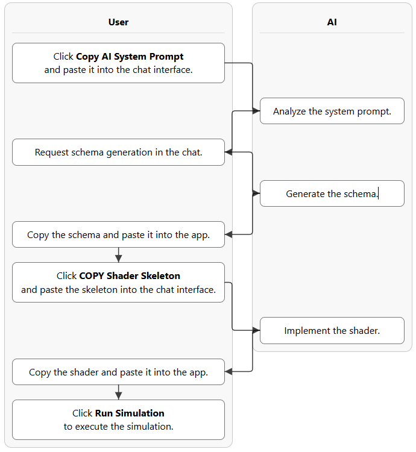
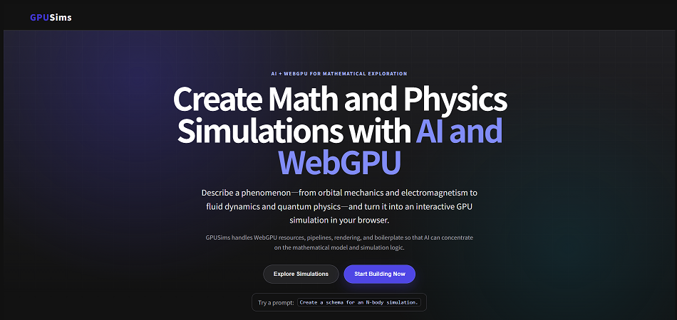

Getting started
Create your first simulation
The guided workflow alternates between GPUSims and an AI chat. GPUSims supplies the architecture; the AI supplies the schema and shader logic.

- Copy the AI system prompt
Click Copy AI System Prompt in GPUSims and paste it into the AI chat. This teaches the model the schema format, resource layouts, shader bindings, and output rules.
- Request a simulation schema
Describe the physical or mathematical system you want. A simple request is enough to begin.
- Generate the WGSL skeleton
Paste the schema into GPUSims, generate the skeleton, and give that skeleton to the AI for implementation.
- Run the simulation
Paste the completed WGSL code into GPUSims and click Run Simulation.
Create a schema for an N-body simulation.Application interface
Choose an example or start building
Open gpusims.com. Use Browse Gallery to browse published work, or Start Building to open the guided workflow.

Browse Gallery
Browse published simulations and open their interactive views and explanatory articles.
Start Building
Open the step-by-step interface for schema generation, WGSL implementation, and execution.
Edit Code
Return to the schema and shader editors when a simulation needs correction.
Edit Article
Write or revise the Markdown article associated with the simulation.
Architecture
How the simulation pipeline works
GPUSims strictly separates the declarative simulation blueprint from the procedural GPU execution flow.
- Schema
- WGSL skeleton
- Shader logic
- Execution
The app manages WebGPU resources, pipelines, rendering, and boilerplate. AI focuses on translating mathematics and physics into executable simulation logic.
1. The schema declares the blueprint
The JSON-like TypeScript schema declares uniforms, storage buffers, meshes, shader passes, UI controls, optional readback structures, canvases, and script execution.
const schema: SimulationSchema = {
name: "Cumulative Monte Carlo Pi Estimation",
resources: {
Params: { type: "uniform", obj: state },
Points: { type: "storage", format: "f32", topology: "point-list" },
},
shaders: [{
id: "generate_and_count",
type: "compute",
workgroupSize: 64,
workgroupCount: dispatchX,
bindings: [
{ resource: "Params", varName: "params" },
{ resource: "Points", access: "read_write" },
],
}],
};2. GPUSims generates the WGSL structure
The app converts resource and shader declarations into matching WGSL structs, bindings, and entry points. Do not edit the generated declarations when asking the AI to implement the shader.
@group(0) @binding(0) var<uniform> params: ParamsStruct;
@group(0) @binding(1) var<storage, read_write> Points: array<f32>;
@compute @workgroup_size(64, 1, 1)
fn main(@builtin(global_invocation_id) id: vec3<u32>) {
// The AI implements the mathematical logic here.
}3. The AI implements the mathematics
The AI fills the designated compute, vertex, or fragment entry point without changing the app-generated bindings and layout.
4. GPUSims compiles and executes
The browser creates the WebGPU pipelines, executes the passes, renders storage-buffer output, and displays UI controls and readback values.
Execution
Run and control the simulation

- Drag with the left mouse button to rotate a 3D view.
- Drag with the right mouse button to move the viewpoint.
- Use the sliders and selectors to change uniform parameters while the simulation runs.
- Use Capture Image to preserve the current view for inspection.
- Use Thumbnail to choose the image shown in the gallery.
Debugging
Fix schema and WGSL errors
If parsing, compilation, validation, or execution fails, GPUSims displays an error that can be returned to the AI.

Fix this error.
Expected ':' but found '.' at index 319Paste the revised full schema or full shader back into the appropriate editor. Do not combine both in one response when using the automated extraction workflow.
Verification
Inspect numerical readback values
A simulation that compiles may still be mathematically wrong. Use readback labels to expose important counters, residuals, energies, constraints, or error estimates.

Do these parameter values and calculation results look mathematically
and physically reasonable? Explain any suspicious values.For complex algorithms, ask the AI to add an additional debug canvas or extra readback values for intermediate stages.
Verification
Inspect the rendered result
Capture the current canvas, upload it to the AI, and provide the intended phenomenon and current parameter values.
Is this image consistent with the intended physical model?
Identify visual evidence of numerical or implementation errors.AI-assisted checks are useful for iteration, but complex, safety-critical, or publishable scientific models require knowledgeable human review and independent tests.
Understanding the result
Generate an explanatory article
After the model is working, ask the AI to connect the visual result to the underlying mathematics and implementation.
Please write an article explaining the phenomena observable in this
simulation, the underlying mathematics, the numerical method, and the
WGSL implementation.Treat the first article as a starting point. Continue asking about unfamiliar equations, assumptions, numerical approximations, and unexpected behavior.
Advanced workflow
Automate the cycle with an agent
A local program can coordinate an official AI API, browser automation, and GPUSims to generate code, run simulations, return errors, inspect values and images, and create an article.
- Generate the schema and shader.
- Enter the code and run the application.
- Return compilation and runtime errors for correction.
- Inspect numerical readback and screenshots.
- Create a thumbnail, metadata, and explanatory article.
Do not assume that automating a provider's consumer chat website is permitted. Review the provider's current terms and use an official API for automated workflows.
Technical scope
WebGPU strengths and limitations
- WebGPU provides parallel computation and modern GPU rendering directly in supported browsers.
- GPUSims simulations generally use 32-bit floating-point values rather than scientific-computing double precision.
- Traditional numerical libraries such as LAPACK are not directly available inside WGSL.
- GPU algorithms must be designed around workgroups, buffers, memory bandwidth, and parallel execution.
These constraints make GPUSims best suited to learning, experimentation, visualization, and prototyping—not as a substitute for independently validated scientific software.
For the broader educational and AI-research motivation, read the Project Vision.